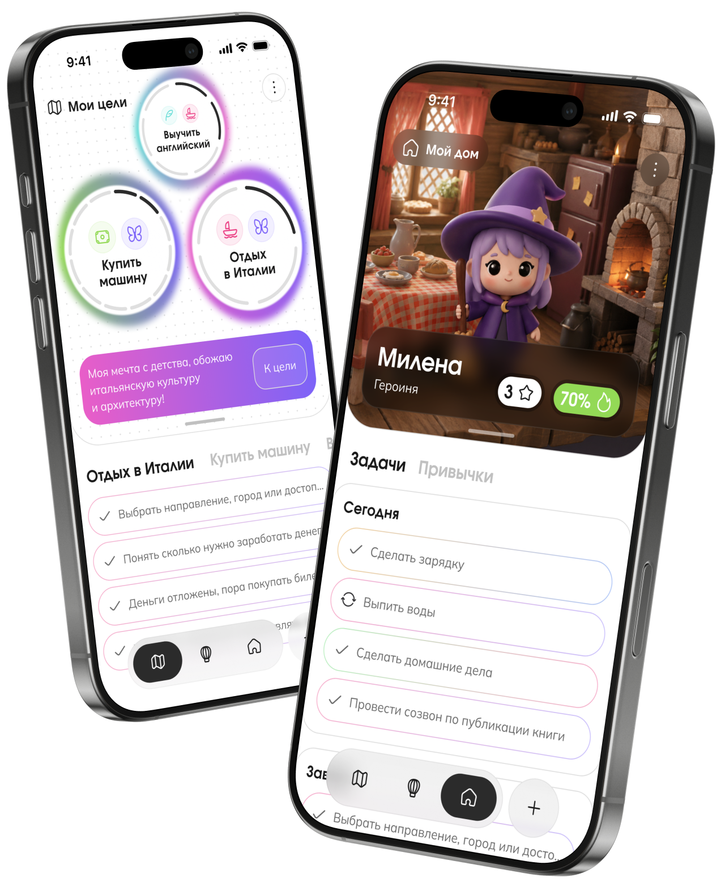

Origin
Геймифицированный лайф-трекер · 2026
Пространство, которое помогает превратить личное «хочу» в первый посильный шаг.
Задача
Не ещё один трекер задач, а пространство для важной цели
Людям бывает сложно сформулировать личную цель, перейти от намерения к действию и вернуться к планам после перерыва.
В привычных приложениях задачи, привычки и цифры прогресса быстро становятся самоцелью. Связь ежедневных действий с личным смыслом постепенно теряется.
Origin объединяет цель, личное «зачем», план, действия и рефлексию в одном сценарии. Пользователь сам выбирает нагрузку и может адаптировать путь к меняющимся обстоятельствам.
Молодые взрослые с несколькими целями одновременно
Фокус исследования — люди 20–27 лет, которые совмещают работу и учёбу, ставят личные цели и уже пробовали планировщики или трекеры привычек. Им нужен не контроль, а помощь в выборе приоритета, старте и возвращении после паузы.
Высокодетализированный MVP, а не запущенный продукт
В прототип вошли четыре ключевых сценария. Пауза, возвращение, социальная поддержка и полноценный AI-ассистент остались частью концепции. Продуктовые метрики ниже — план проверки после запуска, а не фактические результаты.
MVP приложение помогает
Сформулировать
Понять, чего хочется и почему это действительно важно.
Начать
Разложить большую цель и выбрать посильное первое действие.
Продолжить
Менять приоритеты, делать паузу и возвращаться без обнуления пути.
Продуктовые вводные
Осознание цели и первый шаг
Если пользователь связывает цель с личным «зачем» и получает возможность выбрать небольшое первое действие, ему будет проще перейти от намерения к действию.
Логика продукта
От проблемы к решению в MVP
Цель теряется за списком дел
Большой замысел пугает масштабом, а отдельные задачи и привычки быстро теряют связь с личным смыслом.
Смысл и первый шаг снижают барьер
Если человек сформулирует личное «зачем» и увидит небольшое действие, ему будет проще начать и продолжить.
Цель становится центром сценария
При создании пользователь фиксирует причину и ресурсы, получает план, а затем может менять нагрузку и приоритеты.
ЭтапМетрикаЧто покажет
АктивацияКонверсия в создание первой целиПроходит ли пользователь первоначальный сценарий
Первая ценностьПервое действие в течение 24 часовПомогает ли продукт перейти от намерения к действию
УдержаниеD7 / D30Возвращается ли пользователь
ВозвращениеВозобновление после паузыПомогает ли не бросить путь
ЦенностьЗначимое действие за неделюДвигается ли человек к выбранной цели
Исследование
Теория объяснила мотивацию, интервью — реальное поведение
Психологическая теория
Автономия, компетентность и связанность стали основой решений о выборе, прогрессе и поддержке.
25 конкурентов
Большинство продуктов измеряют действия, но редко удерживают связь с личным смыслом цели.
8 интервью
Мотивация оказалась нелинейной: ресурсы, приоритеты и желание действовать постоянно меняются.
Этап 01
Теория самодетерминации
Начал с теории Deci & Ryan, чтобы не сводить мотивацию к streak, очкам и напоминаниям. Три психологические потребности дали рамку для первых продуктовых гипотез.
- Автономия: человек сам выбирает цель и способ движения.
- Компетентность: видит результат небольших реальных действий.
- Связанность: получает поддержку без давления и соревнования.
Этап 02
Функциональный анализ рынка
Сравнил 25 продуктов по 35 пунктам: постановка задач, привычки, мотивация, рефлексия, эмоциональный слой, AI и связанные механики.
- Задачи и привычки существуют отдельно и не прикреплены к цели. Нет связи действий и смысла.
- Персонализация в основном касается визуала и не адаптирует контент под каждого пользователя.
- Streak и награды поддерживают внешнюю мотивацию, но не доказывают реальный прогресс.
Возможность: объединить ежедневные действия вокруг личной цели и адаптировать поддержку к состоянию человека.

Этап 03
Глубинные интервью
Поговорил с восемью респондентами 20–27 лет, большинство из которых совмещают работу и учёбу. Разбирал конкретные цели: от появления желания до старта, паузы и возвращения.
- Что запускает желание изменений и помогает сформулировать личное «зачем».
- Почему масштаб цели, перфекционизм и отсутствие дедлайна мешают начать.
- Как меняются приоритеты, что происходит после срыва и помогает ли геймификация.
Результат: 33 пользовательские задачи в формате JTBD и вопросы HMW, связанные с конкретными продуктовыми возможностями.
Масштаб цели затрудняет начало
Предложить одно быстрое действие вместо полного плана.
Приоритеты меняются вместе с жизнью
Дать человеку пересобирать фокус в моменте.
Перерыв ощущается как провал
Сохранить историю и сделать возвращение частью сценария.
Игровые очки не равны прогрессу
Разделить эмоциональную награду и реальные действия.
От наблюдений к продукту
Девять состояний вместо линейного пути пользователя
Поиск цели → зажигание → страх → планирование → действие → фрустрация → пауза → возвращение → финиш. Пользователь может оказаться в любой точке до цели и мы сможем помочь.
Вместо линейного CJM была построена цикличная модель из девяти динамических состояний с возвратными переходами между ними и без единственной «правильной» точки входа: пользователь может начать путь как с поиска цели, так и с планирования.

Каждая из этих точек получила свою функцию: первый шаг на 5 минут, режим паузы, ритуал завершения. Модель использовалась не как иллюстрация «пути пользователя» для презентации, а как рабочий инструмент, напрямую определивший архитектуру MVP.
Связка JTBD + HMWРаскрыть

User flow
Сценарий меняется вместе с ситуацией пользователя
На каждом шаге приложение проверяет контекст: есть ли цель, есть ли план, хватает ли энергии сегодня. Дальше предлагает действие, пересмотр нагрузки или паузу.

Важно узнать пользователя
Онбординг со знакомством до регистрации, чтобы сразу показать ценность персонализации.
Планирование цели
Ресурсы и смысл цели фиксируются при создании. Автогенерация плана из контекста ускорит создание задач и привычек.
Цели - ядро приложения
Каждая цель имеет причину. К каждой цели свои задачи и привычки. Так проще осознавать ценность ежедневных дел.
Пауза - это нормально и правильно
Не давим на пользователя никогда. Наоборот изучаем его паттерн и предлагаем гибкие режимы и смену приоритетов целей.
Визуальное направление
Простота интерфейса дает пространство эмоциям
3D-иллюстрации создают эмоциональный слой и показывают развитие пространства.
Монохромные компоненты остаются спокойными и предсказуемыми. Цвет появляется в целях, ценностях и прогрессе — там, где человеку важно заметить личное изменение.


MVP-прототип
Четыре сценария: от знакомства до ежедневной адаптации
01
Онбординг и первая цель
Знакомство с идеей приложения, создание персонажа и переход к личной цели.

02
Создание цели
Человек фиксирует личное «зачем», ресурсы и первое выполнимое действие.

03
Чекин состояния
Пользователь сам сообщает о своём состоянии и выбирает подходящую нагрузку.

04
Пересмотр приоритетов
Фокус можно изменить без потери целей и пройденного пути.

Юзабилити
13 из 13 участников завершили сценарий за 3:36

До
После
Тестирование подтвердило понятность сценария, но не доказывает влияние продукта на долгосрочную мотивацию — для этого нужен запуск и продуктовая аналитика.
После запуска
Провести тестирования на пользователях
Воронка активации
Главная проверка после запуска — не количество открытий или чекинов, а переход от намерения к первому значимому действию. На каждом шаге воронки можно увидеть, где продукт теряет пользователя.
- 01Начал онбординг
- 02Завершил знакомство
- 03Создал первую цель
- 04Выбрал первое действие
- 05Выполнил действие
Точка активации: пользователь выполнил первое заранее выбранное действие, связанное с конкретной целью. Чекины, открытия приложения и игровые награды сами по себе активацией не считаются.
A/B
Погружение против скорости
A/B тесты создания целей. В одном варианте - подсказки и погружение в осознание цели. В другом - скорость создания цели.
Основной показательКоличество действий с целью за 7 дней
- Завершение онбординга
- Создание первой цели
- Выбор первого действия
- Выполнение действия
- Изменение приоритетов
- Возвращение после паузы
Монетизация
Freemium показывает ценность до оплаты
Базовый путь к цели
До трёх целей, основные задачи и привычки. Красивые предметы магазина недоступны, аналитика и поведенческие инсайты почти отсутствуют.
Два использования premium-функций
Голосовой ввод, автозаполнение полей и AI-инсайты о поведении можно использовать два раза — пользователь видит пользу на деле.
AI-функции и визуальные предметы
Платный доступ упрощает действия и углубляет аналитику. Дополнительный доход приносит продажа внутриигровых предметов и оформления.
Низкий барьер и понятная причина платить
Бесплатный сценарий приводит к первой ценности, пробные premium-возможности демонстрируют эффект, а персонализация поддерживает повторное использование.
Что получилось
Через теорию и исследование к уникальному продукту


Главный вывод
Глубокое дискавери и правильные гипотезы дают наиболее ценный результат. Продукт получается смелым, выделяется среди конкурентов и реально закрывает боли пользователей. Модель состояний, персонализация через геймификацию, осмысление целей и гибкость мотивации — всё это сделало продукт живым.
Исследование стало архитектурой MVP
Теория мотивации, анализ 25 продуктов и 8 интервью превратились в четыре ключевых сценария. Понятность онбординга и создания цели проверена с 13 участниками.
Реальное влияние на поведение
Origin не запускался, поэтому пока неизвестно, помогают ли механики выполнять действия, возвращаться после паузы и удерживать связь с целью в долгую.
Короткий работающий сценарий
Собрать вайбкод-прототип цепочки «цель → первое действие → выполнение», настроить события и только затем проверять AI-подсказки, паузу и социальную поддержку.